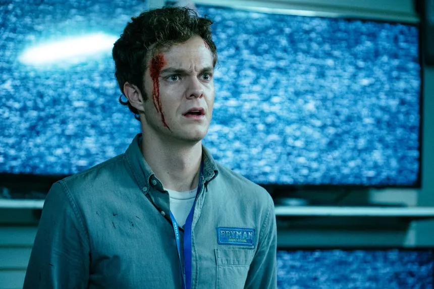
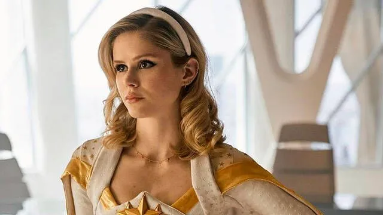

Temporadas y Capítulos
- Temporada 1 (2019) - 8 episodios
- Temporada 2 (2020) - 8 episodios
- Temporada 3 (2022) - 8 episodios

La serie The Boys se estrenó el 26 de julio de 2019 en la plataforma de Amazon Prime Video. Es una producción estadounidense que se originó en Estados Unidos. The Boys está basada en una serie de cómics del mismo nombre, creada por Garth Ennis y Darick Robertson, publicada por primera vez en 2006. La adaptación para la televisión fue desarrollada por Eric Kripke, conocido por ser el creador de la serie Supernatural.
*The Boys* está ambientada en un mundo donde los superhéroes son vistos como celebridades y figuras de poder, pero muchos de ellos son corruptos y abusivos. La serie sigue a un grupo de vigilantes conocidos como "The Boys", quienes buscan desenmascarar a estos superhéroes y exponer la verdad detrás de sus abusos. El equipo se enfrenta a "Los Siete", un grupo élite de superhéroes que trabaja para la corporación Vought International, cuyo objetivo es explotar los superpoderes para obtener beneficios económicos y políticos.
| Nombre | Foto | Descripción |
|---|---|---|
| Homelander |  |
Homelander es el líder de "Los Siete" y el superhéroe más poderoso del mundo. Aunque públicamente es visto como un salvador, es un sociópata narcisista, cruel y violento. |
| Hughie Campbell |  | Hughie es un joven que se une a "The Boys" tras la trágica muerte de su novia a manos de un superhéroe. A pesar de ser el más inexperto del grupo, es un personaje clave por su crecimiento personal. |
| Billy Butcher |  |
Billy Butcher es el líder de "The Boys". Tiene un odio profundo hacia los superhéroes, especialmente Homelander, a quien culpa de la desaparición de su esposa. |
| Starlight (Annie January) |  | Starlight es una joven superhéroe que se une a "Los Siete". Aunque comienza como idealista, descubre rápidamente la corrupción dentro del grupo y lucha por mantener su moral. |
| Frenchie |  |
Frenchie es un miembro de "The Boys" con habilidades en armas y explosivos. Tiene un pasado oscuro, pero es leal a su equipo y muestra empatía por los que sufren. |
| Kimiko |  |
Kimiko es una miembro de "The Boys" con habilidades sobrehumanas. Aunque es inicialmente una asesina silenciosa, tiene un lado sensible y está en busca de redención tras su traumático pasado. |